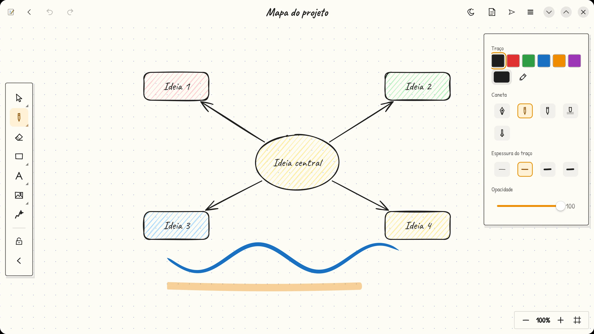
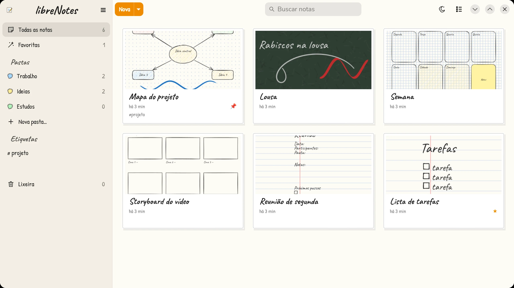
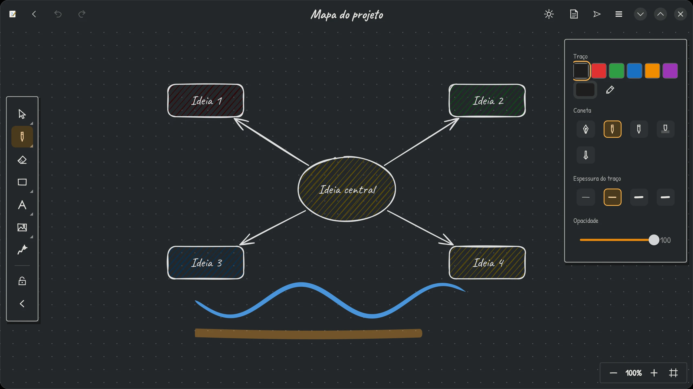

Quadro infinito
Formas, setas que se prendem às formas, texto, notas adesivas, molduras, imagens e ponteiro laser. Zoom e pinça sem limite.
Um quadro infinito para rabiscar, planejar e estudar. Canetas com pressão, pastas, etiquetas e onze tipos de papel. Gratuito, sem conta e sem anúncios.

O quadro infinito do Excalidraw com a organização e as canetas do Samsung Notes, num app só.
Formas, setas que se prendem às formas, texto, notas adesivas, molduras, imagens e ponteiro laser. Zoom e pinça sem limite.
Pressão e inclinação, cinco canetas (tinteiro, lápis, marca-texto...) e borracha na ponta da caneta. Segure parado no fim do traço e ele vira uma forma perfeita.
Pastas coloridas, etiquetas, favoritas e lixeira. A busca encontra palavras mesmo sem acento. Modelos prontos de tarefas, reunião e mapa mental.
Liso, pautado, quadriculado, pontilhado, milimetrado, isométrico, caligrafia, pauta musical, Cornell, kraft e lousa.
Rejeição de palma enquanto você escreve. Toque com dois dedos para desfazer e com três para refazer. Pensado para tablets e telas touch.
Nada de nuvem obrigatória nem conta: tudo fica no seu computador. Proteja notas com senha. Abre arquivos do Excalidraw.
Tema claro, papel e lousa no escuro, e uma tela inicial que parece uma estante de cadernos.


Sem senha de administrador: o libreNotes vai para a sua pasta pessoal e aparece no lançador de aplicativos.
No terminal, na pasta onde o arquivo foi salvo:
tar xzf libreNotes-*.tar.gz ./libreNotes/install.sh
Procure por libreNotes no lançador. Para atualizar, rode o install.sh da versão nova.
Precisa de Linux 64 bits com GTK 4.20+ e libadwaita 1.8+ (Arch, CachyOS, SteamOS, Fedora 43+, Ubuntu 25.10+ e similares). Para desinstalar: ./libreNotes/install.sh --remove. Suas notas ficam guardadas.
O libreNotes não tem anúncios, assinatura nem versão paga. Se ele te ajuda a estudar, trabalhar ou criar, considere fazer uma doação de qualquer valor. Cada contribuição paga horas de desenvolvimento e mantém o projeto vivo.
Obrigado por apoiar! ✏️
Escaneie o QR code ou copie o endereço.